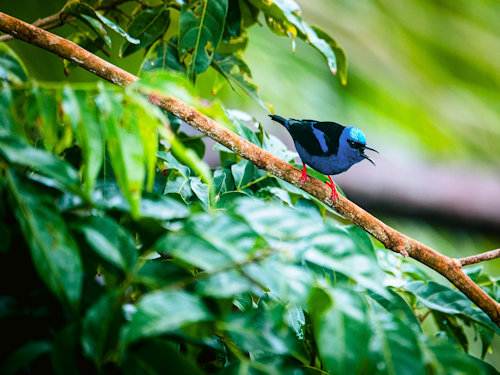
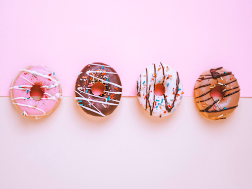
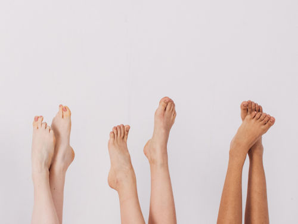

Hi! My name is Aisha (phonetic spelling: ay-zhuh). I am a junior full-stack software developer pursuing my passion in coding, reigniting the days of my youth where I'd make front-end websites of my favorite cartoon/video game characters in the early and late 2000s.
Java • Spring • Thymeleaf • JavaScript • MVC • HTML • CSS • TDD • Agile (Scrum) • Object Oriented Programming (OOP) • JSON • React • REST APIs • Responsive Design / Mobile • Relational Databases • Source Control / GitHub
| Birdwatching in Paradise | |
|---|---|
|
 |
|
Team Project (6 collaborators)
This is a full-stack bird watching tourism website featuring
a list of tours generated from the back-end with birds and areas
connected to each tour.
|
|
| Donut Clicker | |
|---|---|
|
 |
|
This is an application where you click to make donuts.
The user has the option to purchase a donut multiplier,
which increases the amount of donuts made when clicking,
or they can purchase an auto-clicker, which will make
donuts for you every second.
|
|
| Footopolis | |
|---|---|
|
 |
|
Team Project (6 collaborators)
Footopolis is designed to inform the user about various foot conditions and provide options for relief.
This full-stack project consists of the back end storing various foot conditions and treatments that the
user can read about on the front end. The front-end uses React and contains various other features,
including the "Foot Ailment Quiz", which I solely worked on. I also led the team on overall website styling
after we struggled with a consistent look.
|
|